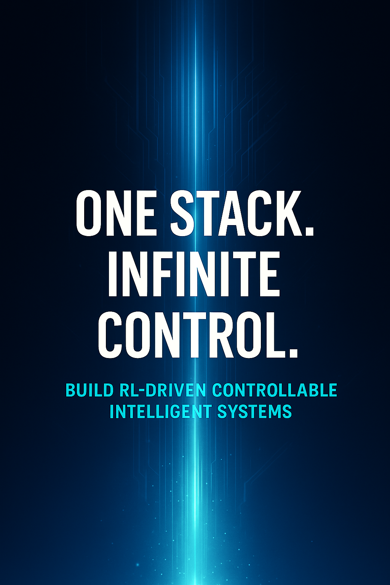

硅谷可控大模型智能体 AI 关键技术
Control is enforced at runtime, not assumed at training time.
硅谷可控大模型智能体 AI 技术以大模型智能体第一性原理为核心，融合硅谷专家多年企业级智能体系统实践，以 Controllable AI 为纲，打通 Agent 系统工程 与 强化学习（RL）控制引擎，构建运行时可治理的智能体体系——
在运行时治理层，课程通过 Middleware × Hooks × Time Travel 构建可回溯的控制机制，使智能体的推理与决策过程始终保持可观察、可干预、可审计；
在复杂业务与多轮推理场景中，结合 Deep Agents 与 Graph Computing，持续对推理链路与决策路径施加结构化约束，防止目标漂移与失控扩散，实现规模化场景下的可控演化。
你将学会在真实业务中构建行为可预测、决策可干预、运行可审计的大模型智能体，使 Controllable AI 成为可长期运行、可治理、可扩展的核心系统能力。
深度智能体（Deep Agents）、Controllable AI、Human-Centered AI、Controllable Natural Language Generation (NLG)、Responsible AI、Deep Agents、LangGraph、LangChain、Coze、Dify、Context Enginnering、工具链工程、Anthropic、通义千问、DeepSeek、GPO-OSS、强化学习、第一性原理、数学建模、PPO 算法、GRPO 算法、广义近端策略优化、GAE广义优势估计、TD Learning时序差分学习、TD 误差、价值函数、优势函数、动作价值函数、Q 函数、策略优化、奖励最大化、折扣因子、轨迹、马尔可夫决策过程、策略网络、价值网络、反向传播、梯度计算、回报、奖励模型、策略、状态、动作、奖励、状态转移、对数导数技巧、蒙特卡罗方法、贝尔曼方程、Q 学习、Bootstrapping、探索与利用、经验回放、Actor-Critic 框架、KL 散度、PPO 截断、推理模型、基于人类反馈的强化学习、可验证奖励强化学习、函数调用、上下文工程、工具链工程、技能、长思维链、监督微调、LoRA、Controllable Human-Centered AI、Deliberative Alignment、Constitutional AI、安全对齐、Explainable AI、深度神经网络、大语言模型、大模型灾难性遗忘、图计算、中间件、智能体工具链、Google Pregel
- 前沿工具、可控框架与实践落地
- 主流模型实践案例：深度结合 DeepSeek、Qwen3、Anthropic Claude 等行业热门大模型的应用场景解析
- 核心开发框架：系统讲解 LangGraph、LangChain、Coze、Dify 等工具链的使用逻辑与工程整合方法
- 前沿技术应用：聚焦 context engineering（上下文工程）、harness engineering（harness 工程）等前沿技术的落地路径
- 核心用法与优化技术：详解 Function Calling（函数调用）、Chain of Thought（思维链）等核心能力及 SFT（有监督微调）、LoRA（低秩适配）等模型优化手段
- 工程化辅助技术：融入图计算、中间件、Agent Harness 等工程组件，参考谷歌 Pregel 框架设计思路提升系统可用度
- 强化学习：数学内核与工程实现
- 核心基础与框架：以大模型智能体第一性原理为核心，立足 trajectory（轨迹）与 experience（经验）数据基础，聚焦 state（状态）、action（动作）、reward（奖励）三大核心要素，构建概率化决策与状态转移的数学框架
- 核心范式与算法：深入解析 RLHF（基于人类反馈的强化学习）、RLVR（基于价值反馈的强化学习）两大核心范式，以及 PPO（近端策略优化）、GRPO 等关键算法的数学原理
- 双模型协同机制：讲解 actor-critic（执行者 - 评价者）双模型的协同逻辑与交互机制
- 底层驱动与数学推导：拆解 TD error（时序差分误差）的底层驱动逻辑，完整呈现 GAE（广义优势估计）的数学推导过程
- 优化链路与关键模块：通过几何级数化简、梯度计算、对数导数技巧等打通强化学习优化链路；涵盖 discount factor（折扣因子）权重设计、reward-to-go（未来奖励）优化、advantage function（优势函数）构建等关键数学模块，平衡模型偏差与方差
- 核心方法对比分析：深度对比蒙特卡罗方法与 TD learning（时序差分学习）的适用场景与特点
- 全对齐、合规伦理与决策透明

- 核心可控技术：围绕 Human-Centered AI（以人为本的人工智能）理念，聚焦可控自然语言生成技术，详解 Deliberative Alignment（审慎对齐）、Constitutional AI（宪法人工智能）等安全对齐技术
- 合规与伦理规范：结合欧盟人工智能法案、世界人权宣言等国际准则，强化 AI 系统的合规设计与伦理意识
- 决策透明度提升：引入 Explainable AI（可解释人工智能）技术，提升智能体决策的透明度、可追溯与可解释
- 关键问题应对：讲解大模型灾难性遗忘的技术应对策略，保障系统长期运行的稳定与可控